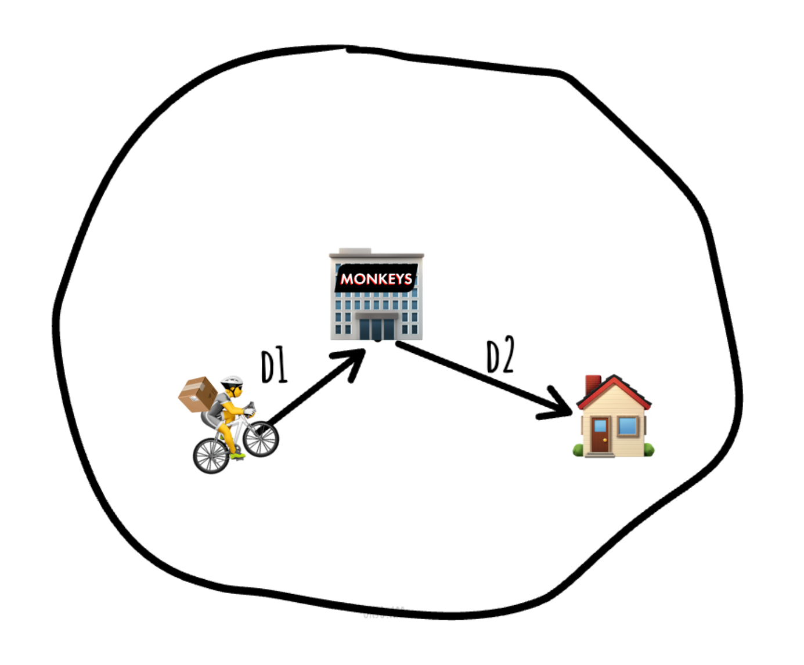

Last year my friend worked at a delivery company. Their job was to deliver groceries to customers on a bicycle. In their company, the wage was based on the amount of orders per hour they delivered. For example:
- X euros for 4 orders per hour
- Y euros for 6 orders per hour
- Z euros for 8 orders per hour
- Ω euros for 10 orders per hour
But, "What is the wage of a delivery driver?", I thought. Sure, it cannot be consistent, but on average it should be similar.
TL;DR: most-likely the wage rate won't be above the minimal (X euros for 4 orders per hour).
First let's formulate the problem in a mathematical way.
Monkeys is an imaginary grocery delivery service. Their warehouse is located in the center of a city with radius . The clients are uniformly distributed in the circle. What is the expected value of delivery time?
So, the delivery man starts off in the center (warehouse), brings the groceries to the customer and comes back to get ready for the next delivery.

The expected value of delivery time is the expected value of the distance to the customer divided by the velocity of the delivery man.
The value of can be interpreted as the expected value of distance between the center and a random uniform point in the circle.
To calculate it, let's cut the circle into thin rings with radius and width . Then the area of these rings is . The probability of getting a point inside this ring is the area of the ring divided by the area of the whole circle.
Hence, the expected value of is
This means that the expected value of time is
But what does this say about the real world? Well, let's use the same formula, but on the city I live in (Groningen).
![[groningen.png]]
By the formula above, the expected value of delivery time is
An average e-bike has a velocity of , plug that in
14 minutes to deliver one order! Therefore, on average a person can deliver 4 orders per hour. This is not accounting for the paths being not straight lines, the time to walk to the customer and incidents that might happen.
In other words, the rates above the minimum hourly rate are hardly reachable.
<details> <summary> What if they take multiple orders at a time? </summary>Sometimes, 2-3 orders are bundled when they are located in the same area. This way a worker may earn more than the minimum. There is a problem – in the end of the day, the wage rate is selected from the average orders per hour done during the shift. Implying they have to be lucky to get these bundled orders to keep up the streak.
</details> <details> <summary> Isn't more benefitial for the company to bundle orders? </summary>I think so. It is better to pay on 1-2 euros more to one person, than pay extra X euros (~8) to another. However, they don't control how many, when and where orders are made. Data about customer behaviour is required to make conclusions whether it is benefitial or not.
</details>